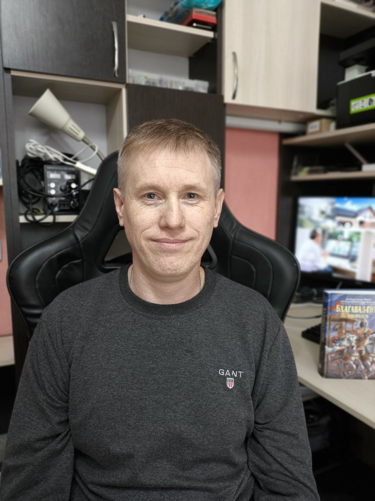

Метод Руслана Атмана · Жизнь без боли
Я собрал всё, что вытащило меня из грыжи L5-S1, в пошаговый метод. Никаких поездок по врачам — занимаешься дома, в своём темпе. Доступ открывается сразу после оплаты. Выбери, насколько глубоко хочешь зайти.
Выбрать тариф ↓От 490 ₽ · гарантия возврата 14 дней

Я не врач и не ставлю диагнозов. Я человек, который сам прошёл через ад межпозвоночной грыжи 1,0 см, отказался от операции и восстановился. На это у меня ушло несколько лет поисков — и я собрал то, что реально сработало, чтобы ты не тратил их, как я.
Сейчас мне 45. Поднимаюсь на пятый этаж без остановки, приседаю, отжимаюсь, поднимаю 20–30 кг. Живу без ограничений и без таблеток.
Не верь мне на слово. Лучший аргумент — отзывы ниже, в том числе от практикующего мануального терапевта и людей, чьи врачи слово в слово подтвердили суть метода.
Настоящие живые отзывы, без купюр. Среди них — практикующий мануальный терапевт и люди, которым лечащие врачи слово в слово подтвердили метод.
«Здравствуйте, Руслан! Вы молодец, что самостоятельно добрались до сути проблемы. Я врач, мануальный терапевт. Мне тоже понадобилось несколько лет, чтобы понять, что те схемы лечения, которые предлагали вам неврологи, неверны. Действительно, дело совсем не в самой грыже — она даёт боль лишь у 2-3% пациентов, а причина почти всегда в другом. Не согласен только с тем, что грыжи появились у вас после переноса тяжестей. Перегрузив спину, вы получили болевой синдром. Грыжа, скорее всего, уже была. На приём приходят 14-летние пацаны, которых мамы готовят к отмазке от армии и исследуют у них всё, что можно. Так вот, МРТ показывает, что у некоторых уже 2-3 грыжи имеются, причём иногда очень серьёзных размеров. При этом спина вообще не беспокоит (видимо, до первой переноски холодильника). Наклоны вперёд лучше делать не стоя, а сидя — эффект тот же, но вероятность поймать осложнение значительно меньше. В острый период нельзя сразу лезть на турник или делать гимнастику: спина получит резкую нагрузку и боль усилится. Очень здорово, что вы делитесь с другими своими результатами, ошибками, сомнениями, достижениями. Чем больше людей найдут способ обойтись без операции (она вовсе не панацея, люди обращаются с болями и после неё), тем лучше. Удачи вам и здоровья!»
«Огромное спасибо за такую обширную классную информацию!!! Руслан, я рада, что случайно наткнулась на ваш метод. У меня проблема один в один с вашей. Сейчас мучаюсь уже полтора месяца. Сначала уколы, таблетки — ничего не помогло. Потом посоветовали одного мануала. Он, в свою очередь, направил на МРТ. Обнаружено две грыжи в пояснице!!! Мануал мне все позвонки (смещение сильное было) вправил, боль чуть облегчилась. Сейчас сказал висеть две недели на турнике, без физических занятий пока. Но легче не становится. Мышцы атрофировались, говорит. Колю по его рекомендации хондропротекторы. Устала от этих болей. А первый месяц до туалета еле по стеночке доползала, и всё. Конечно, атрофируются мышцы!!! Пыталась тогда делать упражнения, но становилось ещё хуже. А оказалось — грыжи. Вот сейчас и думаю: почему мне прописали висеть на турнике и без физ. упражнений? Мне от этого только либо хуже, либо боль на месте. Попробовала по вашей методике из вашего опыта — почувствовала улучшение. Дай Бог вам здоровья!!! Благодарность вам, Руслан, огромная за вашу доброту и желание помочь людям)))) Кстати, я всю жизнь была активная, а в последнее время попала в зону комфорта и стала мало двигаться. И питание соответственно)))) Понимаю свои ошибки. И очень хочу всё изменить! Спасибо.»
«Добрый день! Очень интересная и полезная статья. Хочу поделиться своей историей. Не знаю, я в таком был отчаянии, но ваша история дала надежду — врачам я уже не верю, учитывая сегодняшнее время. Потратил кучу денег на анализы, платные приёмы и т.д. У меня 2 грыжи в поясничном отделе L4-L5, одна 0,49, другая 0,68. Думаю, это результат работы в мебельном магазине за 6 лет (диваны таскал), сейчас работаю в такси уже 7 лет. Боль появилась давно, но не такая, как сейчас — вот уже месяц болит по-другому, сильнее. Таблетки не пью до последнего. Пока определил, что это грыжи, ушло много времени, денег и нервов: УЗИ желудка, кишечника, МРТ брюшной полости, ездил до индийского травника — там только 7 тысяч оставил, плюс травы, был у уролога, терапевта, хирурга. Терапевт сказал сделать УЗИ почек — обнаружилось, что у меня песок и маленький камешек. Короче, прошёл через всё. Вроде попал к нормальному хирургу, и тот мне всё разжевал по полочкам. Почему боль больше в паху и в правой части живота — узнал, что туда от спины идёт нерв, это грыжа отдаёт вперёд, а я-то думал кишечник или аппендицит. В итоге пришёл к выводу: или это мебельный вылазит, или за 7 лет за рулём я угробил себя. Хирург сказал: заниматься спортом, ходьба каждый день, правильная растяжка, больше двигаться. Утром встаю как старый дед, пока не расхожусь. 35 лет, а всё болит — что же дальше будет. Спасибо вам, Руслан, за вашу статью и что делитесь опытом. Потихоньку делаю всё по вашей программе, главное — есть понимание своих ошибок, и двигаюсь уже в правильном направлении к исцелению.»
«Добрый вечер, Руслан! Мне сказали срочно делать операцию уже три нейрохирурга, но я настойчиво хожу к мануальному терапевту. Уже 10 дней мне ставят систему — нестероидные, и укол в больное место, в поясницу. У меня грыжа давит на спинной мозг, протрузии, три грыжи — 0,8, 0,9 и 0,45 мм — и грыжа Шморля. В общем, полный букет, сильно болит правая нога, ходить не могу. Боли ужасные, при покое становится лучше. Три дня назад так чихнула, что чуть не умерла от приступа — думала, меня режут по частям, укололи диклофенак, чуть отпустило. Сегодня купила бандаж, чтобы хоть до врача дойти на своих ногах. Три-шесть шагов боли не чувствую, а потом ужасно начинает болеть нога, и сразу ложусь. Начала потихоньку применять ваш метод — не сразу в моём случае, но всё же результаты есть в положительную сторону. Уже боль не такая острая. Думаю, если не останавливаться, то можно полностью избавиться от боли. Спасибо вам большое!»
«Руслан, здравствуйте, благодарю Вас за этот метод восстановления. Проблема очень актуальна для современного мира. У меня грыжа межпозвонкового диска L5-S1 (левосторонняя) до 5 мм, плюс дегенеративно-дистрофическое заболевание (спондилоартроз, остеохондроз) шейного и пояснично-крестцового отдела позвоночника — в 33 года. Появившаяся боль отправила меня на консультацию к вертеброневрологу. Он слово в слово подтвердил ваш метод: что грыжа не болит, что резать грыжу не избавит от боли и последующих грыж. Сказал прямо: если не поменяешь образ жизни — через полгода всё вернётся. Стала жить по вашему методу, и боли начали уходить. Благодарю Вас ещё раз, вечного здоровья!»
«Привет, Руслан! Читаю, но очень сложно верить — так как много всего рекламируют! У меня грыжа поясничного отдела 3 мм, это по МРТ показало 4 месяца назад. Прихватило спину, я проколола уколы — отпустило, но очень сильно болит нога, прострелы жуткие, больше месяца уже болит. Питание у меня такое же, как у вас. Похудела ровно на 15 кг за четыре месяца! Сказали мне, что это от грыжи болит, и опять выписали много лекарств, а я боюсь желудок посадить, ведь желчного у меня нет. Спасибо за ваш метод — мне он действительно помогает! Денег уже нет на все эти лекарства и процедуры, а раз денег нет, то что остаётся — помирать, что ли? Прописывают кучу лекарств, и всё безрезультатно. Благодаря вашей информации есть улучшения и надежда на то, что не останусь инвалидом до конца жизни на обезболивающих.»
Поймешь причину возникновения боли. Как снять боль в домашних условиях без таблеток и уколов.
Результат: вы наконец поймёте, что происходит в вашем теле и почему стандартное лечение не помогает.
Точная техника, безопасные движения и питание, которое чинит, а не ломает. Мышечный корсет крепнет, позвоночник получает поддержку — боль уходит и не возвращается.
Результат: уже через несколько дней вы почувствуете, как боль начинает отступать.
Разбираемся, что на самом деле держит боль и почему у других она возвращается. Закрепляем результат так, чтобы не откатиться назад.
Результат: боль не вернётся, потому что мы устраним её на всех уровнях — физическом и психологическом.
Вы поймёте истинную причину боли, получите конкретный метод восстановления в домашних условиях и план питания — и начнёте избавляться от боли уже в первые дни.
Итого затрат: от 32 000 ₽ без операции — и от 132 000 ₽, если дошло до хирургии. Чаще без результата, а боль возвращается.
Итого: от 490 до 4 990 ₽. Один раз. Несопоставимо дешевле — и работает с причиной.
Я сам прошёл этот круг — уколы, назначения, два года экспериментов. Деньги потрачены зря, боль осталась.
Затем я 3 года изучал, тестировал на себе, нашёл метод — и за 2 месяца убрал то, что врачи не могли убрать годами. Этот метод я передам вам.
Реальная ценность этого знания — от 30 000 до 50 000 рублей. Именно столько вы в среднем тратите, прежде чем найдёте что-то работающее (если вообще найдёте).
Тарифы накопительные: всё из младшего входит в старший. Начнёшь с малого — доплатишь потом только разницу, а не цену заново.
2 450 ₽
24 950 ₽
4 950 ₽
* Это меньше, чем один визит к мануальщику. Меньше, чем один курс уколов. Но в отличие от них — это не заглушить симптом, а убрать причину.
Чем снять боль прямо сейчас тем, что уже есть у тебя дома.
Твоя домашняя аптечка без лекарств — и где заказать за 5 минут.
Привычные действия, после которых становится только хуже (а их советуют сплошь и рядом).
То, что держит боль на самом деле — и без чего она вернётся, что ни делай.
…и это лишь часть. Полный список уроков — в тарифах выше.
Представьте: вы встаёте утром — и поясница не болит. Идёте по лестнице — и нога не тянет. Поднимаете ребёнка, сумку, мешок — и никакого страха, что прихватит поясницу.
Это реально. Я это сделал. Другие сделали. Вы тоже можете.
«Если ничего не менять — боль будет продолжать красть у вас работу, энергию, настроение и деньги. С этим методом вы можете остановить этот круг — один раз и навсегда.»
Попробуй метод. Если в течение 14 дней поймешь, что это не твое.
Если вы сделаете всё по методу, и боль не уменьшится — напишите мне.
Я верну деньги полностью. Потому что я знаю: если делать правильно — это работает.
Мне важно помочь, а не просто взять деньги. Гарантия действует на все тарифы: я уверен в том, что даю, и не хочу, чтобы вы рисковали.
Выбери тариф и начни сегодня. Доступ открывается сразу после оплаты, а гарантия возврата 14 дней убирает любой риск.